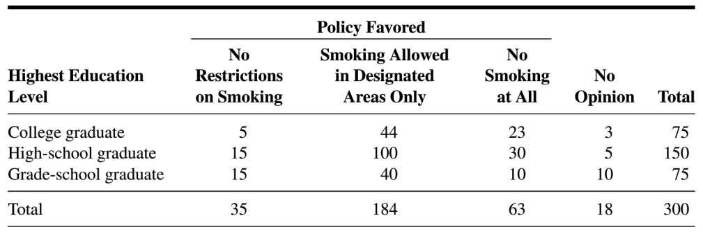

Homework 3
BSTA 550
Please turn in this homework on Sakai. Please submit your homework in pdf format. You can type your work on your computer or submit a photo of your written work or any other method that can be turned into a pdf. Please let me know if you greatly prefer to submit a physical copy. We can work out another way for you to turn in homework.
Try to complete all of the problems listed below at some point this quarter! You may want to save some of them for studying later! Only turn in the ones listed in the “Turn In” column. Please submit problems in the order they are listed.
The more work you include that shows your thought process, the more I can give you feedback.
| Chapter | Turn In | Extra Problems |
|---|---|---|
| 5 | TB # 17, NTB # 1 | # 1, 9, 11 |
| 7 | # 2, 10, 16, 17, 18 | |
| 8 | TB # 8*, 18* | # 2, 5, 7, 10 |
| 9 | NTB # 2, 3 | # 1, 2, 4, 8**, 9, 10 |
* In addition to the graphs, include piecewise defined functions for the pmf and cdf.
** Break up your solution to Chapter 9 #8 into the following 5 parts:
Make a table of the joint probabilities for \(X\) and \(Y\).
Using the table in the previous part, write down the piecewise-defined equation for \(p_{X,Y}(x,y)\). There should be only 3 pieces (cases) for \(p_{X,Y}(x,y)\).
Express \(p_Y(y)\) as a formula (i.e. a function in terms of \(y\)).
Find the conditional pmf \(p_{X|Y}(x|y)\) and express your answer as a piecewise-defined equation. There should be only 3 pieces (cases) for \(p_{X|Y}(x|y)\).
Make a table of the joint cdf \(F_{X,Y}(x,y)\) values.
Non-textbook problems (NTB)
A new drug is packaged to contain 30 pills in a bottle. Suppose that 98% of all bottles contain no defective pills, 1.5% contain one defective pill, and 0.5% contain two defective pills. Two pills from a bottle are randomly selected and tested. What is the probability that there are 2 defective pills in the bottle given that one of the two tested pills is defective?
The following table shows the results of a survey in which the subjects were a sample of 300 adults residing in a certain metropolitan area. Each subject was asked to indicate which of three policies they favored with respect to smoking in public places. (Table is from Biostatistics: A Foundation for Analysis in the Health Sciences, 10th Edition, Daniel, Wayne W.; Cross, Chad L., pg. 630)

Let \(X=\) highest education level and \(Y=\) policy favored. We can let \(X=1\) for college graduate, \(X=2\) for high-school graduate, etc., and similarly for \(Y\), or just keep the category names for the different levels of \(X\) and \(Y\)
Make a table for the joint pmf \(p_{X,Y}(x,y)\) and briefly describe in words what the values are the probability of.
Find the marginal pmf \(p_{X}(x)\) and briefly describe in words what the values are the probability of.
Find the marginal pmf \(p_{Y}(y)\) and briefly describe in words what the values are the probability of.
Make a table for the joint cdf \(F_{X,Y}(x,y)\) and briefly describe in words what the values are the probability of.
Find the marginal cdf \(F_{X}(x)\) and briefly describe in words what the values are the probability of.
Find the marginal cdf \(F_{Y}(y)\) and briefly describe in words what the values are the probability of.
Make a table for the conditional pmf \(p_{X|Y}(x|y)\) and briefly describe in words what the values are the probability of.
Make a table for the conditional pmf \(p_{Y|X}(y|x)\) and briefly describe in words what the values are the probability of.
Forgetful mornings revisited. Using the joint pmf you found in Chapter 9 #2, complete the following questions:
Find the joint cdf of \(X\) and \(Y\) and briefly explain what \(F_{X,Y}(x,y)\) represents in the context of the problem.
Find the conditional pmf \(p_{Y|X}(y|x)\).
Some select answers
Selected answers (or hints) not provided at the end the book:
Chapter 5
- NTB #1: 0.392
Chapter 7
# 2: \(X\in(0,\infty)\), continuous; \(Y\in\{0,1,2,\ldots\}\), discrete
# 10: \(X_j\in[0,\infty),j=1,\ldots,100\); \(Y\in[0,\infty)\); both continuous
# 16: \(Y\) could be 0
# 18: Yes, a r.v. can be both. Give an example!
Chapter 8
# 2: (a) \(p(x)=\binom{7}{x}(.5)^7\) for \(x=0,1,2,\ldots,7\)
# 9: (a) \(c = \frac{1}{8}\)
# 10:
\(x\) 2 4 6 8 \(p(x)\) 3/10 1/2 3/20 1/20
Chapter 9
NTB # 1 Partial answers:
- \(p_{X|Y}(X=\text{high school}| Y=\text{no smoking at all}) = 0.476\)
- \(p_{Y|X}( Y=\text{no smoking at all}|X=\text{high school}) = 0.200\)